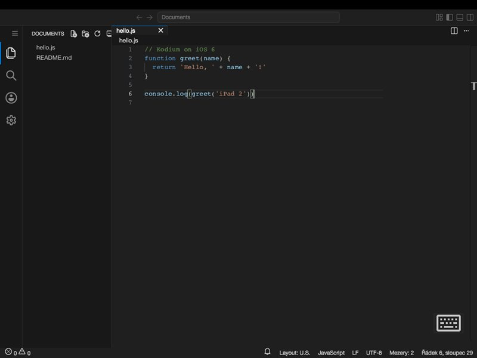

Kodium
A code editor: the VS Code workbench on an iPad 2
A code editor: the VS Code workbench on an iPad 2
The workbench of the open-source VS Code (Code - OSS), running on the device itself on the engine of the Surfari browser: explorer, editor tabs, syntax highlighting, search in files, the command palette, settings and keybindings, themes, the Outline and Timeline views, a terminal and extensions from Open VSX. Text is selected as on iOS, with the loupe, the handles and the system clipboard. An early version, made for a 512 MB iPad 2.

Unofficial apps by samcejko, not affiliated with or endorsed by Twitch, Google, Apple, TikTok, Instagram, Meta, Spotify, Kick, NVIDIA, Mojang, Microsoft, OpenRouter, Vine, X, diVine or the Moonlight, Sunshine and Apollo projects.